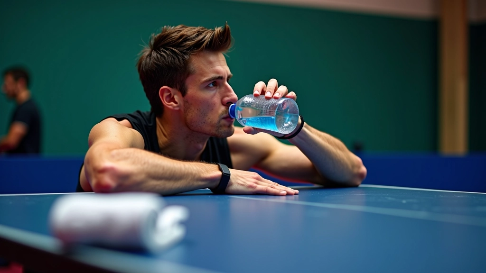
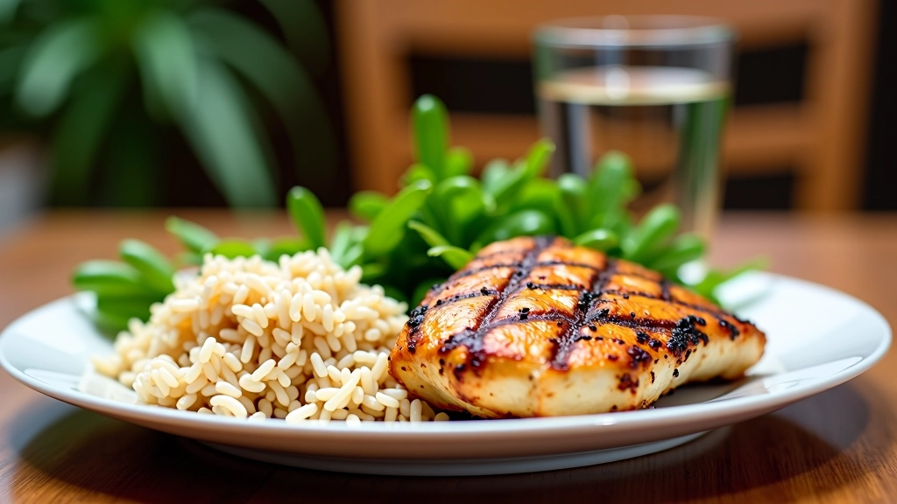
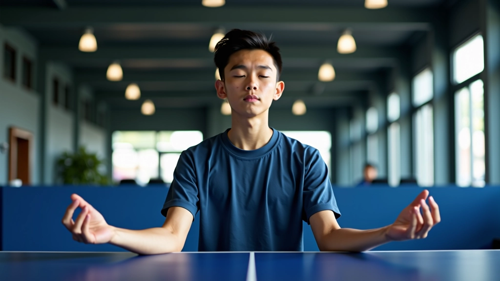
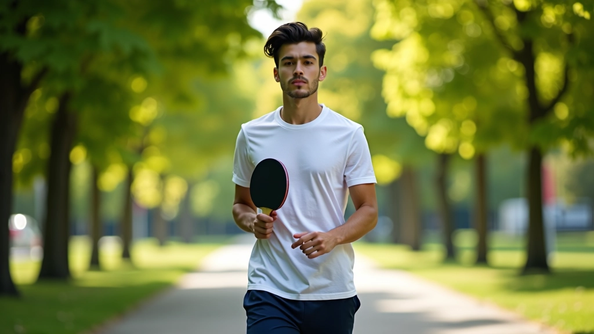
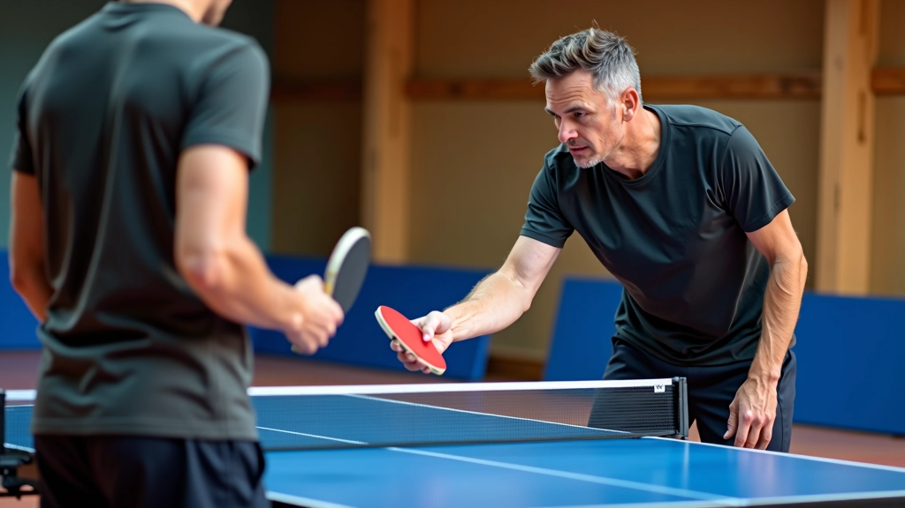
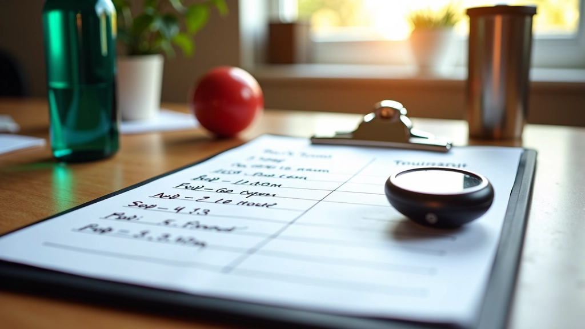

أساسيات الموقف والقبضة الصحيحة
تعلم كيفية اتخاذ الموقف الصحيح وحمل المضرب بطريقة احترافية لتحسين أدائك وتجنب الإصابات
اقرأ المقالكيفية بناء جسد قوي ودعم عقلك للفوز في المباريات
الفوز في تنس الطاولة لا يتعلق فقط بالمهارات التقنية. أجسامنا وعقولنا تحتاج إلى رعاية خاصة لتصل إلى أفضل حالاتها. التغذية السليمة والنوم الكافي والاستراتيجيات النفسية — هذه العناصر الثلاثة هي الفرق بين اللاعب الجيد واللاعب الاستثنائي.
في هذا الدليل، نشرح كيفية العناية بجسدك وعقلك. لا نتحدث عن حميات غريبة أو تدريبات مستحيلة. فقط نصائح عملية تعمل فعلاً مع لاعبي تنس الطاولة.

تناول الطعام الصحيح ليس معقداً كما يبدو. اللاعب الذي يتدرب 5 أيام في الأسبوع يحتاج إلى طاقة ثابتة طوال اليوم. قبل التدريب، تناول وجبة خفيفة غنية بالكربوهيدرات. بعده، تناول بروتين سريع لإعادة بناء العضلات.
موزة أو شريحة خبز مع زبدة الفول السوداني قبل 45 دقيقة من التدريب. هذا يعطيك طاقة ثابتة. لا تدرب على معدة فارغة — ستشعر بالإرهاق سريعاً.
لديك 30 دقيقة ذهبية بعد التدريب. تناول بروتين وكربوهيدرات معاً. دجاج مع أرز أو زبادي يوناني مع عسل. هذا يساعد عضلاتك على التعافي والنمو.
المفتاح الأساسي: اشرب الماء طوال اليوم. 2-3 لتر يومياً للاعب متوسط. أثناء التدريب، رشفات صغيرة كل 15 دقيقة. الجفاف يقلل الأداء بسرعة.

النوم هو حيث يحدث السحر الحقيقي. أثناء النوم، يعيد جسدك بناء العضلات ويشفي الإصابات الصغيرة ويجدد طاقتك. لاعب تنس الطاولة يحتاج إلى 8 ساعات على الأقل كل ليلة. لا تنم 5 ساعات وتتوقع أداء عالي.
بين الجلسات التدريبية، خذ فترات راحة نشطة. لا تجلس على الكنبة طوال اليوم. مشية خفيفة أو تمارين استطالة تساعد العضلات على التعافي بسرعة أكبر.
الفرق بين الفائز والخاسر في لحظات حاسمة ليس المهارة الفنية — إنها القوة النفسية. عقلك قوي جداً. يمكنه أن يساعدك أو يؤذيك قبل المباراة وأثناءها.
لا تفكر في الخسارة. ركز على نقطة واحدة فقط: التنفس الهادئ والحركات التقنية. قبل الدخول للمباراة، خذ 5 أنفاس عميقة ببطء. عد من 1 إلى 5 أثناء الشهيق، وعد من 1 إلى 5 أثناء الزفير.
إذا أخطأت في نقطة، لا تفكر فيها مجدداً. أنت تركز على النقطة التالية فقط. هذا يسمى "اللحظة الحاضرة". اللاعبون المحترفون يفعلون هذا بشكل طبيعي.
تمرين بسيط: قبل كل نقطة، قل لنفسك جملة واحدة: "أنا مركز" أو "أنا جاهز" أو "أنا قوي". هذا يهدئ الأعصاب ويزيد الثقة بالنفس بشكل ملحوظ.


القلق قبل البطولة طبيعي تماماً. حتى أفضل اللاعبين يشعرون به. المفتاح هو عدم السماح للقلق بالسيطرة على أدائك.
جرب تمرين بسيط: قائمة بالنقاط الإيجابية. اكتب 3 أشياء تفعلها جيداً في اللعب. ضربتك الأمامية قوية؟ حركتك السريعة؟ تركيزك في نهاية المباراة؟ اقرأ هذه القائمة قبل الدخول للمباراة.
بعد كل مباراة، اكتب ملاحظات قصيرة: ماذا فعلت جيداً؟ ماذا يمكن أن يتحسن؟ هذا يساعدك على التعلم وعدم تكرار الأخطاء. بعد فترة، ستشعر بثقة أكبر لأنك تعرف نقاط قوتك بالضبط.
التغذية والتعافي والقوة النفسية ليست خيارات إضافية — إنها أساسيات. لاعب جيد يأكل بشكل صحيح وينام 8 ساعات وينقّي عقله قبل المباراة.
ابدأ اليوم. لا تنتظر البطولة القادمة. اشرب ماء أكثر، نم أبكر، وركز على تنفسك. هذه التغييرات البسيطة ستظهر نتائجها في أسابيع قليلة.
تذكر: الفوز يبدأ في الطبق والسرير والعقل. وليس على الطاولة فقط.

عن الكاتب
فريق المحتوى التحريري
أعده فريق أكاديمية الطاولة التحريري، المتخصص في توفير إرشادات عملية وموثوقة لتحضير اللاعبين للبطولات.
استكشف المزيد من أدلة التحضير للبطولات
تعلم كيفية اتخاذ الموقف الصحيح وحمل المضرب بطريقة احترافية لتحسين أدائك وتجنب الإصابات
اقرأ المقال
خطوات تفصيلية لإتقان الضربة الأمامية والخلفية والدوران والقطع. يركز على الأخطاء الشائعة
اقرأ المقال
برامج تدريبية شاملة تجمع بين التدريبات على الطاولة والتمارين البدنية لتطوير التحمل
اقرأ المقالالمعلومات الواردة في هذا الدليل لأغراض تعليمية عامة فقط. لا تشكل نصيحة طبية أو متخصصة. قبل إجراء تغييرات كبيرة على نظامك الغذائي أو برنامجك التدريبي، استشر متخصصاً صحياً أو مدرباً معتمداً. كل جسم مختلف والاحتياجات تختلف من شخص لآخر.